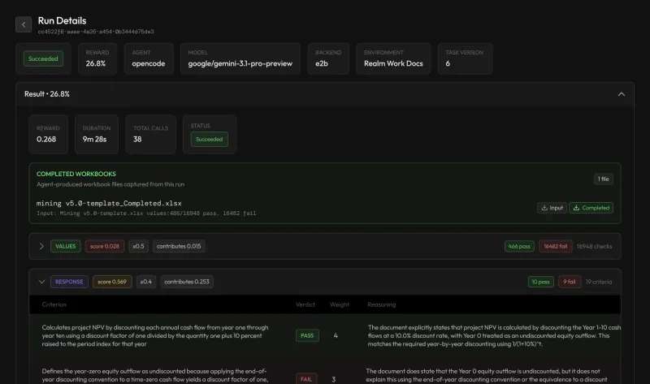
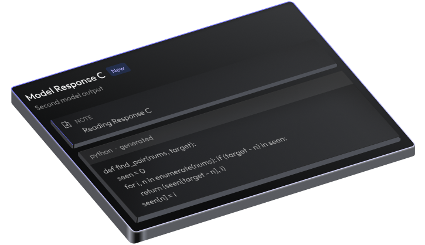
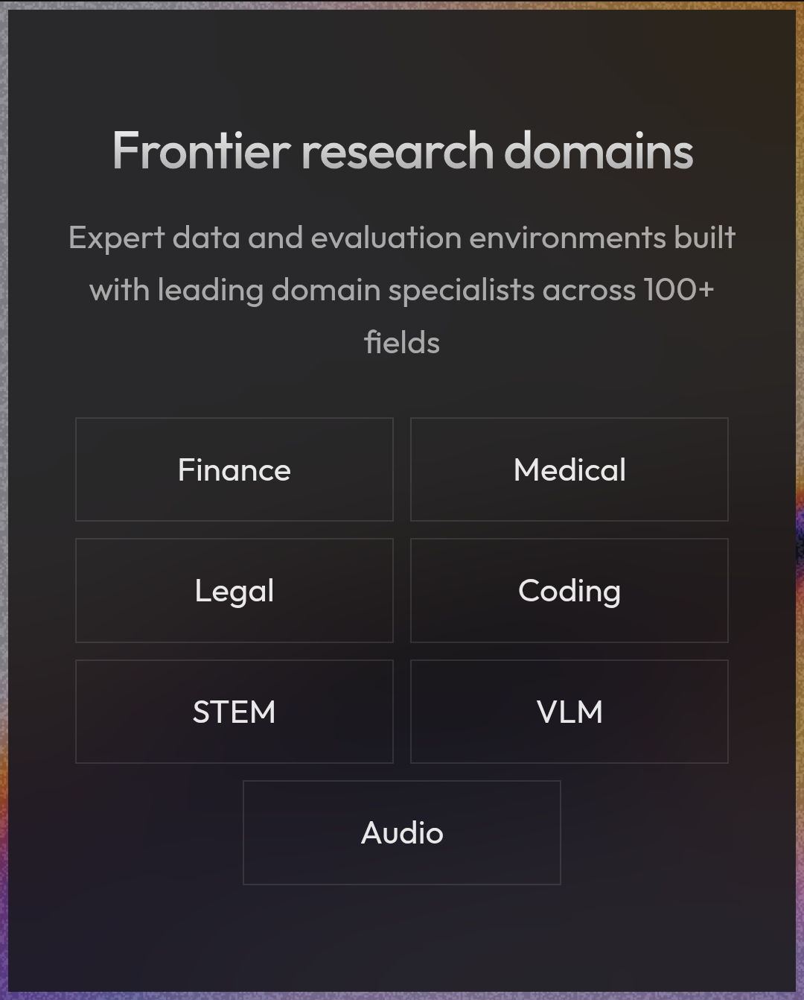

We're building the infrastructure for advancing intelligence through expert human data, real-world training environments, and contextual evaluations.
Explore Intelligence →
Our data platform manages execution at scale with performance tracking that measures velocity, error rates, cost per task, and quality in real time.


The environment where domain experts create, review, and deliver complex datasets across industries like healthcare, legal, finance, and more.
Data pipeline performance dashboard to quantify expert data quality, velocity, and reliability. Track productivity, quality scores, turnaround time, and overall performance through a powerful analytics dashboard.
Zara, our AI recruiter agent, sources and vets domain experts at high velocity, forming the human foundation that generates net-new expert data for advanced AI systems.

Explore advanced research across healthcare, finance, coding, legal, education, science, and many other expert domains that help build the next generation of artificial intelligence.